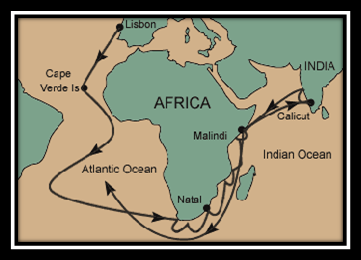

La sfarsitul secolului al XV-lea, europenii erau hotarati sa gaseasca un nou drum spre Orientul Indepartat. Voiau sa faca negot direct cu China, Japonia si India, fara a mai fi nevoiti sa strabata Drumul Matasii, care trecea, pe uscat, prin Asia Centrala si care era controlat de Imperiul Otoman.
In iulie 1497, din porunca regelui Manuel I, exploratorul portughez Vasco da Gama a ridicat ancora din Lisabona, sperand sa gaseasca o noua ruta spre India. Sub comanda sa se aflau patru corabii: doua vase comerciale mari, São Gabriel si São Raphael, o caravela usoara, Berrio, si o corabie (fara nume) cu provizii (care mai tarziu a fost avariata in timpul unei furtuni si a fost abandonata). Flota a urmat drumul spre sud-vest inainte de a ajunge la Capul Bunei Sperante. A navigat apoi pe langa coasta de est a Africii. In drumul lor, portughezii au asezat pe tarm coloane de piatra, numite padrãos. Acestea aveau sa ii calauzeasca pe marinari in viitor. Cu ajutorul unui navigator arab, au traversat Oceanul Indian in numai 23 de zile, ajungand la Calicut, in sudul Indiei, unde corabiile le-au fost inconjurate de barci. Bastinasii le-au oferit fructe si legume proaspete.
1. Pentru a evita vanturile si curentii nefavorabili, Vasco da Gama si-a condus corabiile in largul Oceanului Atlantic, departe de coasta . Nu au fazut tarmul timp de 3 luni. Marinarii se temeau ca nu vor mai vedea niciodata pamantul.
2. Portughezii sperau sa faca negot cu stapanitorii Africii Orientale. Eu fost bine primiti in Malindi, unde sultanul le-a dat hrana si mirodenii in schimbul marfurilor portugheze.
3. Stapanitorul hindus din Calicut, Zamorin, l-a primit bine pe Vasco da Gama, dar a refuzat sa faca schimb de marfuri cu portughezii. Vasco da Gama si oamenii lui au parasit India cu o incarcatura modesta de mirodenii.